Pandas >> DateOffset, Timedelta, Period
In this article, we will talk about the basic concepts of DateOffset, Timedelta, and Period objects. We will compare them and demonstrate the detailed usage of the three objects.
- Basic
- DateOffset
- Timedelta
- Period
- Conclusion

Basic
All three objects are not a point in time, they all have the length in some way.
DateOffset
Standard kind of date increment used for a date range.
https://pandas.pydata.org/docs/reference/api/pandas.tseries.offsets.DateOffset.html
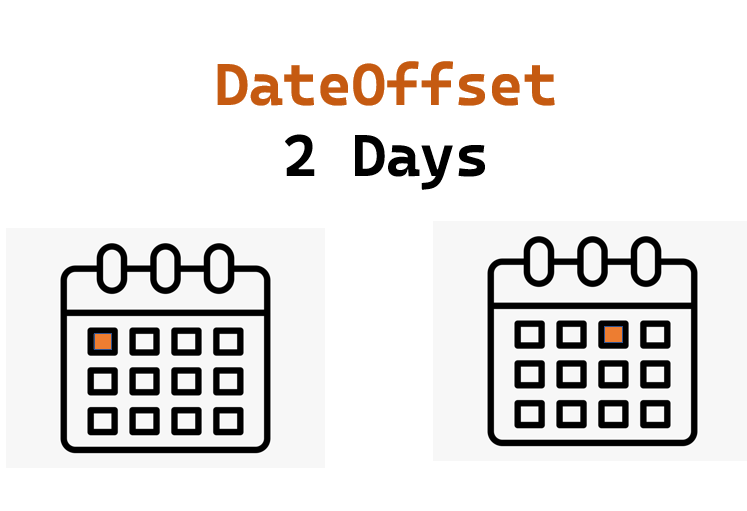
DateOffset mainly stands for changes in calendar level.
import pandas as pd
from pandas.tseries.offsets import DateOffset
pd.Timestamp(2022,4,3) + DateOffset(days=2)
Timestamp('2022-04-05 00:00:00')
Timedelta
Timedelta is the pandas equivalent of python’s datetime.timedelta and is interchangeable with it in most cases.
https://pandas.pydata.org/docs/reference/api/pandas.Timedelta.html#pandas-timedelta
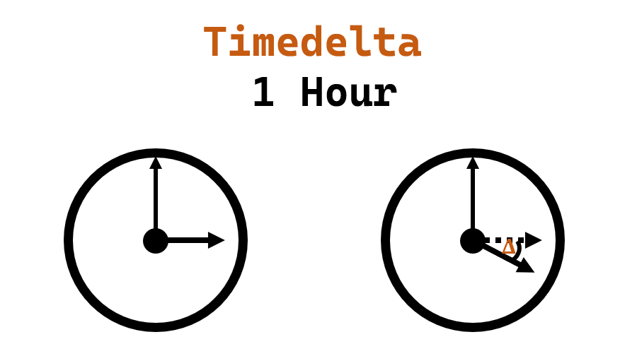
Timedelta represents the difference between two Timestamp objects. It’s just a pure time difference.
pd.Timestamp(2022,4,3) - pd.Timestamp(2022,4,2)
Timedelta('1 days 00:00:00')
Period
Represents a period of time.
https://pandas.pydata.org/docs/reference/api/pandas.Period.html
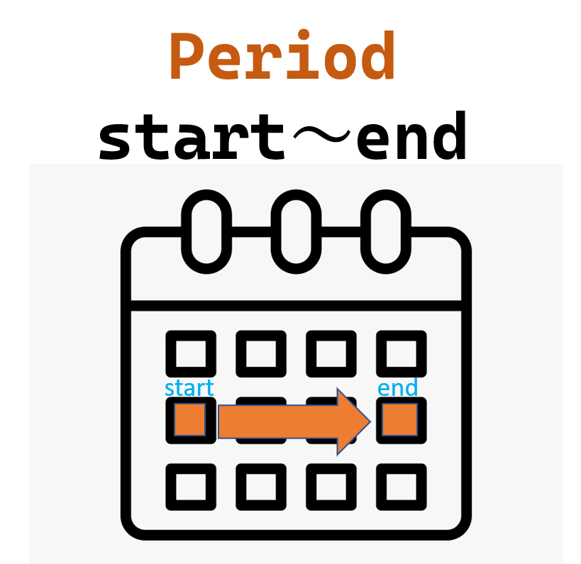
The Period is a period of time, so it has a start and an end.
For example, we define a two-days period from 2022/4/8. The starting point of the period is 2022/4/8 00:00:00 and the end point is 2022/4/9 23:59:59.999999999.
p = pd.Period("2022/4/8", freq="2d")
print(p.start_time)
print(p.end_time)
2022-04-08 00:00:00
2022-04-09 23:59:59.999999999
DateOffset
You can use DateOffset to implement many convenient date-related operations.
Create a DateOffset object
DateOffset(months=1)
# OR
pd.DateOffset(months=1)
<DateOffset: months=1>
Adding a time duration
pd.Timestamp(2022,4,3) + DateOffset(weeks=1)
Timestamp('2022-04-10 00:00:00')
Subtracting a time duration
pd.Timestamp(2022,4,3) - DateOffset(weeks=1)
Timestamp('2022-03-27 00:00:00')
Apply operations on Series
s = pd.Series([
pd.Timestamp("2021-1-1"),
pd.Timestamp("2021-2-1"),
pd.Timestamp("2021-3-1"),
])
s + DateOffset(days=1)
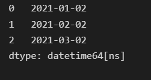
s - DateOffset(weeks=1)
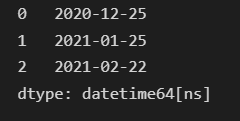
We can also add a Series of DateOffset-type to a Timestamp-type Series. But this operation is not vectorized and has performance problems.
offset = pd.Series([
DateOffset(days=1),
DateOffset(days=2),
DateOffset(days=3),
])
s + offset
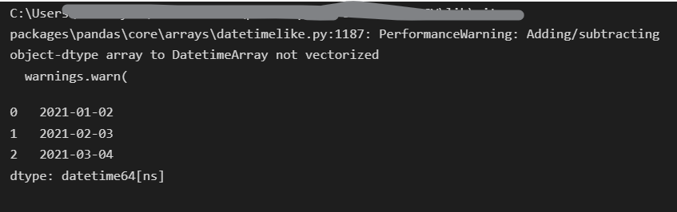
Useful features in pandas.offsets
- Get the month-start of the current month
pd.Timestamp("2022/04/15") - pd.offsets.MonthBegin()
Timestamp('2022-04-01 00:00:00')
- Get the month-end of the current month
pd.Timestamp("2022/04/15") + pd.offsets.MonthEnd()
Timestamp('2022-04-30 00:00:00')
- Get the month-start of next month
pd.Timestamp("2022/04/15") + pd.offsets.MonthBegin()
Timestamp('2022-05-01 00:00:00')
- Get the month-end of last month
pd.Timestamp("2022/04/15") - pd.offsets.MonthEnd()
Timestamp('2022-03-31 00:00:00')
- Get the month-start of last month
pd.Timestamp("2022/04/15") - pd.offsets.MonthEnd() - pd.offsets.MonthBegin()
Timestamp('2022-03-01 00:00:00')
- Get the month-end of next month
pd.Timestamp("2022/04/15") + pd.offsets.MonthBegin() + pd.offsets.MonthEnd()
Timestamp('2022-05-31 00:00:00')
- Get the date after 3 business days
pd.Timestamp("2022/04/15") + pd.offsets.BusinessDay(3)
Timestamp('2022-04-20 00:00:00')
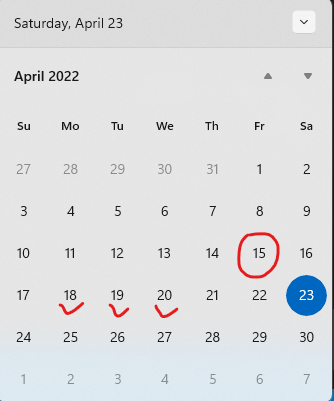
- Get the date after 3 business days with specifying custom holidays
We specify the valid business day 2022-04-18 as a custom holiday, and the result will be a day late.
pd.Timestamp("2022/04/15") + pd.offsets.CustomBusinessDay(3, holidays=[
"2022-04-18",
"2022-05-18",
"2022-06-18",
])
Timestamp('2022-04-21 00:00:00')
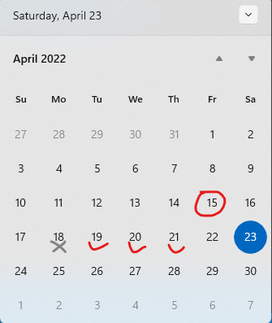
- Customize working days of a week
If the working days are not from Monday to Friday, we can customize weekmask parameter of CustomBusinessDay to implement custom working days.
For example, if Sunday and Wednesday are rest days and other days are working days. We can set the weekmask to ‘Mon Tue Thu Fri Sat’ to meet the need.
pd.Timestamp("2022/04/15") + pd.offsets.CustomBusinessDay(3, weekmask='Mon Tue Thu Fri Sat')
Timestamp('2022-04-19 00:00:00')
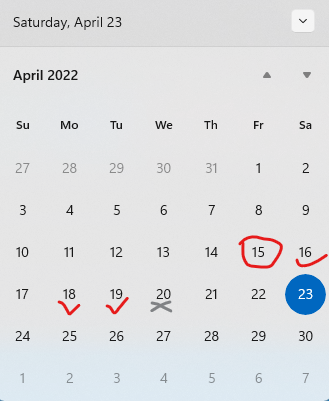
Timedelta
Create a Timedelta object
We can use the constructor of the Timedelta or the difference between two Timestamps to create the Timedelta objects.
pd.Timedelta(2, unit="days")
Timedelta('2 days 00:00:00')
The possible unit values are as follows.
- ‘W’, ‘D’, ‘T’, ‘S’, ‘L’, ‘U’, or ‘N’
- ‘days’ or ‘day’
- ‘hours’, ‘hour’, ‘hr’, or ‘h’
- ‘minutes’, ‘minute’, ‘min’, or ’m'
- ‘seconds’, ‘second’, or ‘sec’
- ‘milliseconds’, ‘millisecond’, ‘millis’, or ‘milli’
- ‘microseconds’, ‘microsecond’, ‘micros’, or ‘micro’
- ‘nanoseconds’, ‘nanosecond’, ‘nanos’, ‘nano’, or ‘ns’.
https://pandas.pydata.org/docs/reference/api/pandas.Timedelta.html
Construct the Timedelta object with kwargs.
pd.Timedelta(weeks=1)
Timedelta('7 days 00:00:00')
Get a Timedelta object by calculating the difference between two Timestamps.
pd.Timestamp("2022/04/23") - pd.Timestamp("2022/04/15")
Timedelta('8 days 00:00:00')
Convert the Timedelta to Python’s datetime.timedelta object
We can use the to_pytimedelta() method of the Timedelta object to convert it to Python’s datetime.timedelta object.
pd.Timedelta(3, unit="days").to_pytimedelta()
datetime.timedelta(days=3)
Adding or subtracting the Timedelta
pd.Timestamp("2022-04-15 08:00:00") + pd.Timedelta(1, unit="hour")
Timestamp('2022-04-15 09:00:00')
pd.Timestamp("2022-04-15 08:00:00") - pd.Timedelta(30, unit="minutes")
Timestamp('2022-04-15 07:30:00')
Calculating the difference of two date columns of DataFrame
We can also calculate the difference between two date columns of DataFrame.
We can use the difference to filter the data or do something else.
df = pd.DataFrame(data={
"date_col1":[
pd.Timestamp("2022-04-01"),
pd.Timestamp("2022-04-05"),
pd.Timestamp("2022-04-08"),
],
"date_col2":[
pd.Timestamp("2022-04-10"),
pd.Timestamp("2022-04-09"),
pd.Timestamp("2022-04-07"),
],
})
df
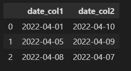
df["date_col2"] - df["date_col1"]
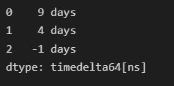
If you want to learn more about how to create a DataFrame in Pandas, you can reference the article below.
Pandas » How to Create DataFrame in Pandas
https://thats-it-code.com/pandas/pandas__how-to-create-a-dataframe/
Period
Create a Period
We can create a Period object as follows.
- Create a 1-day period based on 2022/4/15
As you can see, if the freq parameter is not specified, its default value will be one calendar day(D).
print(f"Start: {pd.Period('2022/4/15').start_time}")
print(f"End: {pd.Period('2022/4/15').end_time}")
pd.Period("2022/4/15")
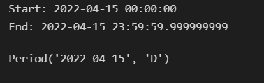
- Create a 3-day period from 2022/4/15
print(f"Start: {pd.Period('2022/4/15', freq='3D').start_time}")
print(f"End: {pd.Period('2022/4/15', freq='3D').end_time}")
pd.Period('2022/4/15', freq='3D')
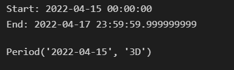
- Create a 2-month period based on the month of 2022/4/15
print(f"Start: {pd.Period('2022/4/15', freq='2M').start_time}")
print(f"End: {pd.Period('2022/4/15', freq='2M').end_time}")
pd.Period('2022/4/15', freq='2M')
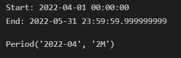
- Create a 5-year period based on the year of 2022/4/15
print(f"Start: {pd.Period('2022/4/15', freq='5Y').start_time}")
print(f"End: {pd.Period('2022/4/15', freq='5Y').end_time}")
pd.Period('2022/4/15', freq='5Y')
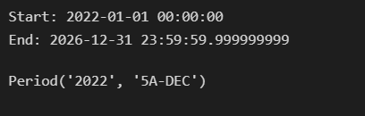
- Create a 2-hour period based on the hour of 2022/4/15
print(f"Start: {pd.Period('2022/4/15', freq='2H').start_time}")
print(f"End: {pd.Period('2022/4/15', freq='2H').end_time}")
pd.Period('2022/4/15', freq='2H')
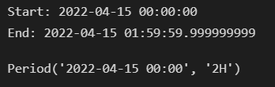
- Create a 1-day 2-hour 30-minute period based on 2022/4/15
You can specify multiple time units in freq string, but you can’t specify month or year in multiple units freq string. The multiple units freq will be converted to minutes(T) automatically.
print(f"Start: {pd.Period('2022/4/15', freq='1D2H30T').start_time}")
print(f"End: {pd.Period('2022/4/15', freq='1D2H30T').end_time}")
pd.Period('2022/4/15', freq='1D2H30T')
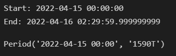
The possible unit aliases that can be specified in the freq parameter are as follows.
| Alias | Description |
|---|---|
| B | business day frequency |
| C | custom business day frequency |
| D | calendar day frequency |
| W | weekly frequency |
| M | month end frequency |
| SM | semi-month end frequency (15th and end of month) |
| BM | business month end frequency |
| CBM | custom business month end frequency |
| MS | month start frequency |
| SMS | semi-month start frequency (1st and 15th) |
| BMS | business month start frequency |
| CBMS | custom business month start frequency |
| Q | quarter end frequency |
| BQ | business quarter end frequency |
| QS | quarter start frequency |
| BQS | business quarter start frequency |
| A, Y | year end frequency |
| BA, BY | business year end frequency |
| AS, YS | year start frequency |
| BAS, BYS | business year start frequency |
| BH | business hour frequency |
| H | hourly frequency |
| T, min | minutely frequency |
| S | secondly frequency |
| L, ms | milliseconds |
| U, us | microseconds |
| N | nanoseconds |
https://pandas.pydata.org/pandas-docs/stable/user_guide/timeseries.html#offset-aliases
Get the start and end of a Period
As above mentioned, we can get the start point of a period by the start_time property of the period object. And get the end point of a period by the end_time property of the period object.
Both are Timestamp objects.
pd.Period('2022/4/15', freq='3D').start_time
Timestamp('2022-04-15 00:00:00')
pd.Period('2022/4/15', freq='3D').end_time
Timestamp('2022-04-17 23:59:59.999999999')
Check if a date falls within a Period or not
We can use the general compare operators (>,<,>=,<=>) to check if a date falls within a Period.
Firstly, let’s define a period from 2022-04-15 00:00:00 to 2022-04-16 02:29:59.999999999.
p = pd.Period('2022/4/15 00:00:00', freq='1D2H30T')
print(f"Start: {p.start_time}")
print(f"End: {p.end_time}")
p
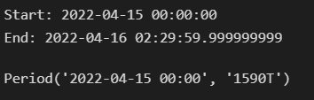
And define three Timestamp type variables
date1 is before the period.
date2 is within the period.
date3 is after the period.
date1 = pd.Timestamp("2022-04-14 3:00:00")
date2 = pd.Timestamp("2022-04-15 12:00:00")
date3 = pd.Timestamp("2022-04-23 1:00:00")
Check if the date1 is before, within, or after the period.
print(f"Before the period: {date1 < p.start_time}")
print(f"Within the period: {p.start_time <= date1 <= p.end_time}")
print(f"After the period: {date1 > p.end_time}")
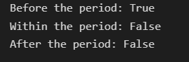
Check if the date2 is before, within, or after the period.
print(f"Before the period: {date2 < p.start_time}")
print(f"Within the period: {p.start_time <= date2 <= p.end_time}")
print(f"After the period: {date2 > p.end_time}")
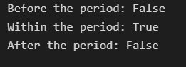
Check if the date3 is before, within, or after the period.
print(f"Before the period: {date3 < p.start_time}")
print(f"Within the period: {p.start_time <= date3 <= p.end_time}")
print(f"After the period: {date3 > p.end_time}")
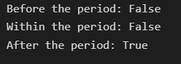
Conclusion
-
We introduced the basic concepts of DateOffset, Timedelta, and Period.
-
About DateOffset, we talked about the topics below.
- How to create a DateOffset object
- How to add a DateOffset object to a Timestamp object
- How to subtract a DateOffset object from a Timestamp object
- How to apply operations on pandas.Series
- Some useful features in pandas.offsets
-
About Timedelta, we talked about the topics below.
- How to create a Timedelta object
- How to convert a Timedelta object to a Python’s datetime.timedelta object
- How to apply adding or subtracting operations to a Timedelta object and Timestamp object
- How to calculate the difference between two date type columns of DataFrame
-
About Period, we talked about the topics below.
- How to create a Period object
- How to get the start and the end of a Period object
- How to check if a date falls within a Period or not